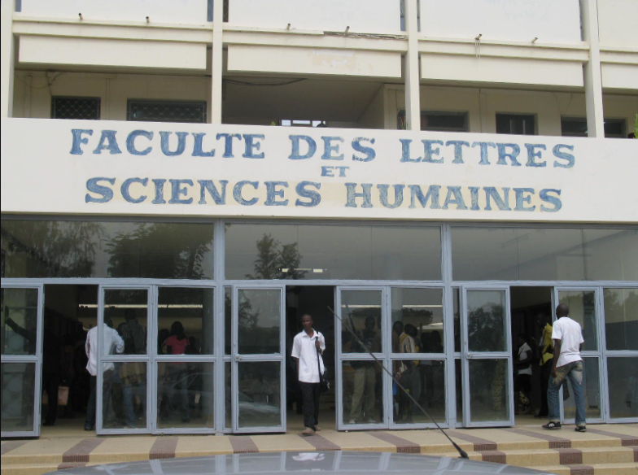

Faculté des Arts, Lettres et Sciences Humaines
Le Département d’Allemand (Langues, Littératures et Civilisations Germaniques),
autrefois appelé Section d’allemand a vu le jour en 1977 avec au départ une vingtaine d’étudiants.
Aujourd’hui, près de 2000 étudiants sont régulièrement inscrits selon le
système LMD, aussi bien en UE fondamentales, transversales qu’optionnelles.
Savoir plus sur la Faculté des Arts, Lettres et Sciences Humaines
La place de l’allemand dans le contexte mondial actuel est sans équivoque.
L’Allemagne étant le leader économique sur le plan européen, sa langue
occupe [Bloc du Département d’Allemand] une place prépondérante et offre
à ceux qui maîtrisent sa culture et son histoire, des perspectives de
carrières aussi bien dans la diplomatie, l’enseignement, la traductologie,
que dans les ONG de développement venues d’ailleurs, œuvrant ou travaillant
avec l’Allemagne.
Le Département d’allemand est resté jusqu’ici l’un des
rares départements à ne pas former des chômeurs. La plupart des licenciés
en allemand trouvent leur compte dans l’enseignement secondaire après une
formation en DIPES I et II et les meilleurs qui réussissent à franchir
le niveau de Master II ont la possibilité de poursuivre leurs études dans
un pays germanophone grâce à l’octroi d’une bourse du DAAD, ou peuvent
préparer un Doctorat sur place.